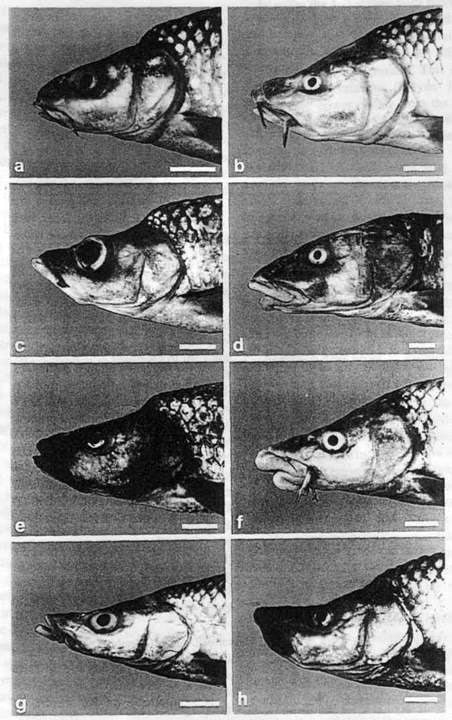
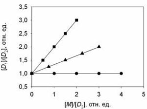

10. Ответы на некоторые типичные "доводы" антиэволюционистов

Чрезвычайно подробный перечень утверждений антиэволюционистов и весьма обстоятельные научные ответы на них опубликованы на сайте TalkOrigins (по-английски). Многие "аргументы" противников эволюции рассмотрены в предыдущих разделах (они выделены вот таким шрифтом). В данном разделе мы поместили ряд дополнительных материалов, показывающих несостоятельность антиэволюционистской аргументации.
Содержание раздела:
- Почему "кембрийский взрыв" не является аргументом против эволюции.
- Эволюция, случайность, энтропия, или Как Дарвин и Клаузиус оказались правыми одновременно (статья Н.М.Борисова, объясняющая несостоятельность утверждений антиэволюционистов о том, что эволюция якобы противоречит второму началу термодинамики).
- Проставляем даты на геологической летописи, или Как физики геологам помогают (статья Н.М.Борисова, объясняющая несостоятельность утверждений антиэволюционистов-"младоземельщиков" о том, что
- Говорят, что эволюция – это теория. С каких пор она стала фактом?
- Правда ли, что «Дарвин устарел»?
- Опровергает ли эволюционную теорию «кошмар Дженкина»?
- Существуют ли внутренние противоречия в теории эволюции?
- Есть ли факты, опровергающие эволюционную теорию?
- Правда ли, что теория эволюции не получила достаточных подтверждений?
- Почему наследственная информация совершенствуется и возрастает в объеме, а не портится в результате мутаций?
- Как могли "из ничего" возникнуть такие сложные органы, как глаз? Правда ли, что эти органы совершенны?
- Можно ли наблюдать эволюцию?
- Правда ли, что люди не вывели ни одного нового вида?
- Хватает ли времени для эволюции наблюдаемых сегодня форм естественным путем?
- Правда ли, что для того, чтобы методом случайного перебора всех возможных вариантов создать сложную биологическую молекулу (например, белка гемоглобина), не хватило бы всего времени существования Вселенной?
- Правда ли, что естественным отбором нельзя объяснить возникновение полового размножения?
- Почему обезьяны сейчас не превращаются в людей?
- Действует ли в научных кругах запрет на критику эволюционной теории?
- Являются ли антиэволюционизм (креационизм) и его разновидность – "теория разумного замысла" ("intelligent design") наукой?
- Думают ли животные?
- Совместимы ли теория эволюции и христианство?
- Правда ли, что Дарвин перед смертью отрекся от своих взглядов?
- Почему у эволюционистов всегда такой высокомерный тон, почему они так неуважительно отзываются о своих оппонентах - антиэволюционистах? Это - нарушение научной этики!
- Почему авторы этой публикации ссылаются на Ричарда Докинза - ведь всем известно, что это очень "попсовый" автор, и к тому же воинствующий атеист?
- Что такое "полистраты"?
Почему "кембрийский взрыв" не является аргументом против эволюции
Многие крупные таксоны (типы и классы) современных животных впервые появляются в палеонтологической летописи в течение сравнительно короткого интервала времени в начале кембрийского периода (примерно 542 - 530 млн лет назад), то есть в геологическом масштабе времени - почти мгновенно. Антиэволюционисты иногда пытаются использовать этот факт в качестве аргумента против эволюции: дескать, он противоречит дарвиновским представлениям о постепенности эволюционного процесса, и непонятно, где же предки всех этих животных. Самому Дарвину "кембрийский взрыв" представлялся загадкой, которую его теория не могла объяснить. Усилиями последующих поколений биологов и палеонтологов эта загадка была в общих чертах разгадана. Популярный и подробный рассказ о новейших находках, современных фактах и теориях, объясняющих "кембрийский взрыв", читатель найдет в работах авторов настоящего материала:
А.Ю.Журавлев. Тени зарытых предков
К.Ю.Еськов. История Земли и жизни на ней. Глава 7.
|  |
| Усачи озера Тана |
По своему строению многие из этих новых форм вполне заслуживают не только видового, но и родового статуса, однако по генетике они все очень близки, как им и положено, учитывая их молодой возраст. Поэтому сегодня одни ихтиологи считают эти формы разными видами, другие - только разновидностями. Как показывает изучение аналогичных процессов в более древних озерах Малави и Виктория, где в ходе адаптивной радиации сформировалось примерно по 500 видов рыб-цихлид, для развития полной генетической несовместимости между разошедшимися видами требуется порядка 4-14 миллионов лет. Поэтому неудивительно, что в лабораторных условиях усачи из озера Тана свободно скрещиваются и дают плодовитое потомство. Дайте им 15 миллионов лет - и они наверняка утратят эту способность, если условия жизни в озере останутся более-менее постоянными. Антиэволюционисты могут на это возразить, как это у них принято, что в африканских озерах "рыбы остались рыбами", появились только новые виды и роды, а во время кембрийского взрыва появились "целые новые типы". Но ведь новые типы тоже зарождаются сначала "всего лишь" как новые виды. Это только потом, в ретроспективе, появляется возможность оценить масштаб изменений и приписать группам, произошедшим от появившихся в ходе быстрой адаптивной радиации видов, более высокий таксономический ранг.
Еще следует добавить, что первые бесспорные следы присутствия настоящих многоклеточных животных (царство Metazoa), а именно губок, недавно обнаружены в отложениях криогенового периода Протерозойской эры - более чем за 93 миллиона лет до начала кембрийского периода (см.: Животные появились свыше 635 миллионов лет назад). Нет никаких сомнений, что непредвзятый биолог-систематик, попавший в криогеновый период и ничего не знающий о последующей эволюции земной жизни (ну, например, марсианин, по какой-то случайности имеющий наши современные понятия о принципах биологической систематики), никогда в жизни не выделил бы криогеновых губок в отдельное царство. Он классифицировал бы их как своеобразную специализированную группу колониальных жгутиконосцев - хоанофлагеллят (об этих жгутиконосцах см. в заметке: Расшифрован геном хоанофлагеллят — ближайших одноклеточных родичей всех многоклеточных животных ).
Заметим также, что многие другие эволюционные события разворачивались куда более постепенно по сравнению с "кебрийским взрывом" (например, последовательно и через большие интервалы геологического времени появлялись отделы и классы высших растений, классы наземных позвоночных). Быстрые адаптивные радиации характерны для периодов, наступающих сразу после крупных экологических кризисов. Например, быстрая радиация млекопитающих и костистых рыб в начале Кайнозойской эры, 50-65 миллионов лет назад, была связана с вымиранием, соответственно, динозавров и аммонитов, что привело к освобождению множества экологических ниш.
Эволюция, случайность, энтропия, или Как Дарвин и Клаузиус оказались правыми одновременно)
- Эволюция не противоречит второму началу термодинамики
- Новая информация может создаваться не только разумом, но и сочетанием случайного изменения состояния системы с последующим необходимым (избирательным) запоминанием результатов этого изменения
Бог не играет в кости.
Альберт Эйнштейн
А ангелы смеются, Разыгрывая в кости мой удел…
Лариса Бочарова
Мы все учились понемногу чему-нибудь и как-нибудь... Факт, печальный для учителей и ученых, но неопровержимый: среди многих научных концепций, которыми система образования пытается «загрузить» молодого человека, по истечении многих лет после завершения образования люди в большинстве своем помнят лишь несколько самых «хлестко» поданных идей. В списке таких концепций есть две, о которых одинаково хорошо помнят и которые одинаково плохо понимают – это второе начало термодинамики и теория биологической эволюции. Велик соблазн тут попенять на «косную и неэффективную» систему школьного образования. Однако следует учесть, что хотя эти обе концепции сформулированы уже давно (в середине XIX века), ответ на вопрос, как и почему они не противоречат друг другу, был дан лишь в последние полвека.
Не секрет, что пытливых школьников и студентов при изучении как теории эволюции, так и термодинамики гложет один «проклятый» вопрос. От изучения биологической эволюции у многих, если не у большинства, школьников и студентов, остается впечатление (не вполне верное, ибо и упрощение строения может приводить к эволюционному успеху, как в случае с паразитическими организмами), что эволюция «естественно направлена» от простого к сложному. От изучения второго начала термодинамики — что все системы, предоставленные сами себе, неизбежно «естественно портятся», накапливая в себе «беспорядок» (энтропию). Так как же Дарвин, первооткрыватель феномена естественного отбора в биологической эволюции, и Клаузиус с Томсоном, обосновавшие второе начало термодинамики, могут быть правы одновременно? Более того, если в эволюции так существенны случайные процессы, как же случайность и стихийность может производить на свет не хаос, а порядок и целесообразность?
Таких вопросов ни учителю, ни ученому не следует стесняться. Более того, они являются поводом, чтобы лучше разобраться самому в таком многоплановом явлении, как биологическая эволюция, которая требует для своего изучения хорошего понимания таких разных наук, как математика, физика, химия, биология одновременно. К сожалению, одному человеку очень трудно сочетать глубокие знания всех этих предметов сразу. Тем более трудна такая задача для педагога массовой школы. Поэтому при объяснении комплексных биологических явлений учителя-предметники в области, лежащей за пределами области их компетентности, порой пользуются не научными, а обывательскими понятиями «хаоса», «порядка» и «случайности», которые не проясняют, а лишь затуманивают суть вещей.
Обывателю «хаос» (отсутствие корреляций между вещами и явлениями) и энтропия, являющаяся «мерой количественного измерения хаоса» (математически это логарифм числа элементарных состояний, в котором может находиться система) зачастую кажутся мистическими, почти неподвластными рациональному познанию, едва ли не с инфернальным душком. Как писал К. Ю. Еськов,
…энтропия (вполне заурядная физическая величина) незаметно приобретает отчетливые черты некого Мирового Зла, а нормальное функционирование живых систем вдруг разрастается до масштабов глобального противостояния сил Света и Тьмы.
Такими же мистическими и пугающими представляются обыденному сознанию и случайные явления в природе. Небезызвестный Т. Д. Лысенко, который так и не мог понять дарвинизма, подменяя его ламаркизмом, неслучайно говорил: «наука-враг случайности», и эта позиция отражает непонимание механистической наукой XVIII-начала XIX веков (в методологии которой фактически «застряла» лысенковщина) стохастического (вероятностного) характера многих процессов в природе. Не понимают сущности случайных процессов и религиозные антиэволюционисты (креационисты)[1], говорящие, что биологическая эволюция якобы предполагает образование сложных систем в результате исключительно случайных процессов, и что единственной альтернативой случайному процессу является «разумный замысел».
Тем не менее, в современной науке в понятие случайности не заложено ничего мистического. Это всего лишь свойство события, не предопределенного однозначно начальным состоянием системы, в которой это событие происходит. Противоположностью случайности является не «разумный замысел», а необходимость, или детерминированность, то есть обусловленность исхода какого-либо события за счет причинно-следственных связей с предшествующими событиями.
Своей «непредсказуемостью» случайность пугала естествоиспытателей прошлого, воспитанных на жестко детерминированной картине мира, которую рисует классическая механика Ньютона. П. С. Лапласу такая «светлая и ясная» детерминированность казалась чем-то вроде проявления божественного провидения, повелевающего вещам вести себя «как положено», вплоть до мечты о всеведении: с именем этого ученого связано понятие о «демоне Лапласа», решающем уравнения Ньютона, и поэтому знающего о судьбе мира все. Симптоматично, что именно Лаплас впервые попробовал количественно применить законы Ньютона не только «вперед», но и «назад» во времени, переложив гипотезу И. Канта о возникновении солнечной системы на язык математики. В рамках такого подхода временнáя эволюция мира мыслилась едва ли не фаталистически предопределенной, а «случайность», подобно «хаосу», казалась чуть ли не «игрой темных сил». «Страх случайности» оказался унаследованным официозной философией советской эпохи, которая (в этом она мало отличалась от креационизма) стремилась политизировать естествознание, приспособив его к своему мировоззрению. Как писала Большая советская энциклопедия,
Случайность — отражение в основном внешних, несущественных, неустойчивых, единичных связей действительности; выражение начального пункта познания объекта; результат перекрещивания независимых причинных процессов, событий; форма проявления необходимости и дополнение к ней.
В таком понимании (идущем от классической механики), случайность является следствием не более чем несовершенства нашего разума. Классическим примером здесь может служить бросание игральной кости. В этом случае, хотя нам со времен Ньютона хорошо известны законы природы, влияющие на движение кости, исход бросания мы предсказать не можем, так как из-за погрешности в знании начальных условий решение задачи о поведении кости в полете является неустойчивым по отношению к начальным условиям. Иными словами, малые изменения начальных условий влекут за собой существенное изменение исхода события (выпадение другого числа на кости).
В еще более «затруднительном» положении оказалась классическая термодинамика XIX века, когда перед нею встала проблема решения уравнений движения атомов и молекул, составляющих рабочие тела тепловых машин. Даже если вообразить себе атомы абсолютно твердыми и упругими шарами, предсказать движение каждого такого «шара» становится совершенно невозможно. Правда, в классической термодинамике стохастическую картину на микроуровне удалось «обуздать» с помощью термодинамических потенциалов — функций, представляющих собой усредненные по статистическому ансамблю значения энергий частиц. Подход оказался плодотворным: раз уж мы не можем предсказать поведение каждой частицы в ансамбле, в котором не один миллиард миллиардов частиц, то следует заняться предсказанием, как ведут себя некоторые усредненные показатели системы. Создателям классической термодинамики — от Карно с Клаузиусом до Гельмгольца с Гиббсом — повезло: в терминах термодинамических потенциалов поведение квазиравновесных систем оказалось детерминированным, что до поры до времени сохраняло идущую от Лапласа уверенность в предсказуемости мира.
Тем не менее, термодинамика внесла в картину мира одну принципиальную деталь: в отличие от классической механики, которой все процессы были обратимы во времени, второе начало термодинамики утверждает направление «стрелы времени» — от прошлого к будущему. Несмотря на почти мистическое и фаталистическое отношение неспециалистов ко второму началу термодинамики (мол, оно предопределяет тенденцию к «порче» мира и превращению его в хаос) это начало есть простое следствие из принятого в статистической физике постулата о равновероятности элементарных состояний сложной системы. Поскольку в неупорядоченной системе число элементарных состояний больше, чем в упорядоченной (наглядный пример: выстроить 10 томов собрания сочинений Пушкина по порядку можно лишь единственным образом, а в беспорядке их можно тасовать 10! = 1*2*3*…*10 = 3628800 раз), то при равновероятности изменения элементарных состояний в замкнутой системе, не обменивающейся энергией с внешней средой, вероятность увеличения упорядоченности ничтожно мала.
Тем не менее, опыт показывает, что не каждая в мире система стремится к «хаосу» и «порче». Та же классическая термодинамика зародилась как наука о тепловых машинах, которые преобразуют хаотичное движение микрочастиц в упорядоченное движение поршней, валов и колес. Действуя подобным образом, тепловые машины, разумеется, не нарушают второе начало: они преобразуют в полезную работу не всю хаотичную внутреннюю энергию рабочего тела, а только часть ее. Кроме того, такие машины способны работать только потому, что они потребляют энергию химических связей топлива (сгоревшее состояние для топлива энергетически выгоднее несгоревшего).
Так работает и двигатель вашего автомобиля, и холодильник в вашем доме, и огнестрельное оружие. Подобно тепловым машинам, биологические системы являются ни чем иным, как устройствами, потребляющими энергию Солнца и земных недр и преобразующими ее в упорядоченную эволюцию живого вещества. Так работает и рибосома, и митохондрия, и клетка, и каждый живой организм, и биогеосфера Земли в целом, являясь машиной эволюции видов. Более того, по принципу тепловых двигателей работают не только изделия человеческих рук и живые существа. Такие объекты неживой природы, как конвективные ячейки (см.: ячейки Бенара), морские течения, сезонные ветры, циклоны и т.д. тоже преобразуют хаос в порядок.
Однако нарушения второго начала термодинамики в этом нет. Дело в том, что упорядочение строения материи в ходе работы тепловых двигателей происходит только в ограниченной области пространства и только на ограниченное время. Во внешней по отношению к рабочему телу среде энтропия увеличивается, так что суммарная энтропия системы «рабочее тело плюс внешняя среда» все равно возрастает, в соответствии со вторым началом. Кроме того, тепловые двигатели могут работать, только потребляя энергию от внешних источников, то есть они не вечны.
Дж. Максвелл, рассуждая над вторым началом термодинамики, ввел понятие демона Максвелла – устройства, которое могло бы сортировать молекулы газа по скоростям и тем самым понижать энтропию в сосуде. В настоящий момент ясно, что «демон Максвелла» возможен (более того, все тепловые двигатели являются по сути такими «демонами»), однако он в процессе работы должен потреблять энергию из внешнего источника и диссипировать (рассеивать) ее в среду, тоже внешнюю по отношению к газу в сосуде.
Часто даже в школьных учебниках и научно-популярных книгах на вопрос, для каких систем справедливо второе начало термодинамики, отвечают неверно: оно якобы справедливо только для закрытых систем. Такой ответ путает понятие закрытой системы, за пределы которой невозможен обмен веществом, и системы изолированной, за пределы которой невозможен обмен энергией. Все изолированные системы закрыты, но не все закрытые – изолированы. Второе начало термодинамики, запрещающее уменьшение энтропии изолированной системы, не запрещает такового у системы неизолированной, хотя бы и закрытой. (Понятно, что наша Земля и ее биосфера изолированной системой отнюдь не является). Причина указанной путаницы, по-видимому — все то же недопонимание между специалистами разных профессий, в данном случае физиками и химиками. В то время как физики мыслят категориями термодинамики, которая уделяет основное внимание превращению энергии внутри системы, для химиков, как правило, важнее кинетика, которую интересуют в первую очередь превращения вещества.
Из-за этого обстоятельства некоторые химики, и особенно биологи, редко задумываются о различии между собою обратимых и равновесных процессов. Для термодинамики обратимый процесс – это процесс, в котором приращение энтропии равно подведенному к системе количеству теплоты, деленному на температуру системы. Если же в процессе приращение энтропии больше - то такой процесс необратимый. При необратимом процессе общая энтропия мира, понимаемого как «система плюс внешняя среда», неизбежно возрастает и происходит диссипация энергии от более упорядоченных форм движения к менее упорядоченным. При этом энтропия неизолированной системы в необратимом процессе может уменьшаться за счет отвода лишней энтропии во внешнюю по отношению к системе среду.
Другое свойство, по которому различаются процессы в термодинамике и кинетике, и отличное от обратимости/необратимости – это равновесность/неравновесность. Равновесные процессы, характеризуются одинаковой скоростью перехода частиц из одного состояния (пространственного, энергетического, химического и др.) в другое в каждый момент времени. Большинство химических реакций, в том числе лежащих в основании жизни, обратимы, но только при определенных концентрациях исходных веществ и продуктов они находятся в равновесии. С другой стороны, многие равновесные процессы в термодинамике необратимы: примером могут служить изотермические процессы, когда температура системы искусственно поддерживается постоянной – хотя бы за счет обмена энергией с более массивной внешней средой (водяная или воздушная баня).
Принципиальное различие между равновесными и неравновесными процессами
заключается в том, что ко вторым такие категории классической термодинамики,
как энтропия (а стало быть, и температура, которую определяют через
энтропию, а также зависящая от температуры свободная энергия) строго
говоря, применимы только для близких к равновесию состояний, ибо только в
этом случае можно считать, что дифференциал энтропии является полным. К
описанию систем, находящихся в состоянии, далеком от положения равновесия,
классическая термодинамика применима плохо, поэтому их поведение обычно
описывают с помощью кинетического подхода, который отслеживает изменения
состояния частиц (молекул, атомов и др.) в каждой точке
пространства-времени.
Хотя формулировка процессов эволюции живого в
термодинамических категориях еще не завершена, большинство специалистов
вслед за Нобелевскими лауреатами И. Р. Пригожиным и М. Эйгеном
уверены, что эволюция жизни – это история существенно неравновесных
процессов в существенно открытых системах. Суть неравновесного
термодинамического подхода к изучению биологической эволюции – в описании
живого как совокупности самовоспроизводящихся тепловых машин (вспомним, что
классическая термодинамика успешно описывает превращение хаоса в порядок в
тепловых машинах).
Однако, тепловые машины, изучаемые классической термодинамикой, обладали малым количеством обратных связей между своими элементами, из-за чего кинетика частиц рабочего тела (газа) при взаимодействии с элементами ходовой части машины в них описывалась линейными уравнениями, процесс случайных блужданий частиц был марковским (марковским процессом, или цепью Маркова, называется случайный процесс, вероятности разных исходов нового этапа которого зависит только от состояния на текущем этапе, а не на предыдущих этапах) а изменение во времени термодинамических потенциалов рабочего тела — детерминированным и предсказуемым. В живых же системах обилие обратных связей приводит к нелинейности уравнений кинетики для каждого из элементов системы, немарковскому характеру случайных процессов в системе (его исход зависит от всей предыстории случайных блужданий – система «имеет память»), и непредсказуемому поведению даже усредненных параметров всей системы. По мере развития биологии ученые сталкиваются со все менее и менее детерминированными системами, несмотря на что их поведение критическим образом зависит от такого необходимого (детерминированного) явления, как естественный отбор и несмотря на то, что живые системы обладают «памятью», благодаря которой результаты этого отбора запоминаются в геноме.
Квантовая механика приучила ученых смириться с тем, что в мире существуют процессы, результат которых невозможно однозначно предугадать не из-за ограниченности наших умственно-вычислительных способностей, а в силу природы вещей. Такое осознание далось не даром. Эйнштейн, как известно, так и не мог поверить, что «Бог играет в кости». Его интерпретация квантовой механики, высказанная еще в 1930-е годы, в противовес стохастической «копенгагенско-Боровской», предполагала как раз, что мы «не знаем каких-то скрытых параметров» в поведении частиц микромира. Лишь в 1964 году, после смерти и Бора, и Эйнштейна, Дж. С. Беллом было математически показано, что интерпретации Эйнштейна и Бора существенно различны. Именно, результаты пространственно-временных корреляций между двумя связанными общим прошлым частицами «по Бору» и «по Эйнштейну» будут отличаться между собой. Интерпретация квантовой механики по Бору предполагает бóльшую, чем по Эйнштейну, степень коррелированности между состояниями микрочастиц в паре, объединенной общим прошлым (например, в паре летящих в противоположном направлении фотонов аннигиляционного излучения, рожденных в акте аннигиляции позитрона и электрона). И только в1980-е годы была проведена исчерпывающая экспериментальная проверка, кто прав — Бор или Эйнштейн. Оказалось, что все-таки Бор: стохастический характер наблюдаемых фактов о микромире — результат стохастичности самого микромира, а не неизвестности нам каких-то параметров.
Однако, если квантовая механика касалась в основном объектов микромира, то термодинамика и кинетика живых систем открыла нам неквантовые, сугубо макроскопическе объекты, ведущие себя квазихаотически. В живом мире есть системы, состоящие из нелинейно взаимодействующих компонентов; иногда даже число этих компонентов может быть сравнительно малым. Взаимодействие этих компонентов может быть детерминированным, не включающим элементов случайности (естественный отбор, например, есть процесс необходимый). Тем не менее, такие системы могут проявлять достаточно сложное поведение (гораздо более сложное, чем игральная кость при бросании), которое невозможно предсказать.
Хотя в биологической эволюции существенную роль играют случайные процессы, чисто случайным процессом эволюция, разумеется, не является[2]. Без необходимого отбора эволюция бы не привела ни к каким результатам. В этом смысле роль естественного отбора аналогична роли холодильника в тепловой машине, удаляющего лишнюю энтропию за пределы системы. Существенная разница между эволюцией живого и тепловыми машинами состоит главным образом в резкой нелинейности всех процессов эволюции, что приводит к невозможности предсказать результат эволюции, в то время как ход изменения термодинамических потенциалов рабочего тела двигателя легко рассчитать.
Ю. Л. Климонтович, изучая процессы самоорганизации, в 1983 году доказал т.н. S-теорему, которая гласит, что по мере удаления от равновесного состояния вследствие изменения управляющего параметра значения энтропии системы, отнесенные к заданному значению средней энергии, уменьшаются. Как следствие, информация («отрицательная энтропия», или негэнтропия), порождается не «исключительно разумом», как кажется креационистам, а сочетанием случайного изменения состояния системы с последующим необходимым (избирательным) запоминанием результатов этого изменения. Таким образом, на математическом языке были в рамках неравновесной термодинамики описаны введенные еще Дарвином понятия изменчивости, наследственности и естественного отбора. Вдохновленный успехом нелинейной неравновесной термодинамики, Эйген в нобелевской речи даже назвал Дарвина с его идеей естественного отбора «великим физиком».
Такой подход в последние лет сорок не только «помирил теорию эволюции с термодинамикой», но и оказался продуктивным в гораздо более неясной, по сравнению с эволюцией, проблеме абиогенеза – происхождения живого из неживого (см. обзор "Происхождение жизни"). Противники теории эволюции, указывая на ее «слабые места и белые пятна», часто вменяют ей в вину нерешенность проблемы абиогенеза в современной науке. Хотя такие рассуждения – результат непонимания предмета эволюционной биологии (на самом деле она изучает не возникновение живого из неживого, а изменения со временем уже существующих форм живого), вопрос абиогенеза — один из самых «проклятых» в биологии. Гипотеза панспермии, предполагающая занесение на Землю уже способных к размножению и дальнейшей эволюции начальных форм жизни, может оказаться истинной, но это лишь переносит вопрос о возникновении жизни с Земли на другую планету во Вселенной (из современной космологии известно, что Вселенная не вечна, и что в начальные периоды ее эволюции жизни в ней не могло быть никак).
Конечно, невозможно чертить график по одной точке. Поэтому очень трудно строить догадки о деталях происхождения жизни, имея перед глазами только нашу земную жизнь, несомненно, развившуюся из единого корня. И все же успехи в биологии, обреченной быть «царицей наук XXI века» — царицей, которой служат новые концепции математики, физики и химии — позволяют надеяться на то, что люди все же прольют свет на этот вопрос. Тем более что он не только будоражит наше любопытство, но и может послужить ключом к решению важнейших в наше время проблем обеспечения здоровой и обеспеченной жизни каждому землянину.
Н.М.Борисов
[1] Креационизмом в широком смысле называют религиозную веру и философскую концепцию, постулирующую сотворение мира духовным началом (Богом). В этом смысле креационизм, не относясь к науке, тем не менее, не противоречит никакой научной теории, в том числе и теории биологической эволюции, ибо можно допустить, что Бог творил, используя процесс эволюции. Однако, такая точка зрения, (теистический эволюционизм, или эволюционный креационизм), популярная среди многих верующих ученых, а также знакомых с наукой богословов, по-прежнему неприемлема для некоторых «фундаменталистов», настаивающих на необходимости буквального толкования сакральных текстов, повествующих о сотворении мира Богом (в иудаизме и христианстве - это первые главы Книги Бытия). Поэтому среди креационистов немало таких, которые убеждены в отсутствии биологической эволюции и в том, что возраст нашей Вселенной и планеты Земля составляет около 6000-7500 лет.
[2]Автор не считает вполне уместным поднимать в формате научно-популярного жанра богословские вопросы, да и квалификации богослова у автора нет, но, тем не менее, ранее уже замечалось, что присутствие в эволюции случайного фактора не должно смущать верующих. Как мы уже отмечали, случайное в науке – это не предопределенное предшествующими причинами; но поскольку Бог авраамических религий (иудаизма, христианства и ислама) является существом абсолютно потусторонним материальному миру, акты вмешательства Бога в этот мир не могут не выглядеть «случайными» для науки [Гоманьков А. В. Книга Бытия и теория эволюции. В сборнике «Той повеле, и создашася. Современные ученые о сотворении мира». Клин. 1999].
Проставляем даты на геологической летописи, или Как физики геологам помогают
Напрасно многие думают, что все, как видим, сначала
Творцом создано.
Таковые рассуждения весьма вредны приращению всех наук…
М. В. Ломоносов
1. Как изучать то, чего уже больше нет? (О методологии наук, имеющих дело с прошлым)
Разгадывая тайны природы, наука проникает в глубины микромира, регистрирует сигналы от экзотических объектов, удаленных от нас на миллионы и даже миллиарды световых лет, одним словом – изучает то, что недоступно повседневному человеческому опыту. Однако существуют области познания, в которых непосредственная экспериментальная проверка принципиально невозможна — например, когда мы изучаем прошлое. В самом деле, как можно заглянуть в давно прошедшие эпохи без машины времени и письменных свидетельств очевидцев? Ведь опыт показывает, что существование человечества ограничено не только в пространстве, но и во времени: так, до Гагарина никто из землян не покидал нашей планеты, а из слоев пород земной коры видно, что на протяжении многих и многих веков существования Земли людей не было и в помине.
Может быть, научными методами прошлое вообще не познаваемо, да и «не пристало» науке заниматься настолько «отвлеченными, неприкладными» проблемами, от которых людям «ни холодно, ни жарко»? Тем не менее, жизнь предостерегает от подобной близорукости. Даже в привычной обстановке мы видим, что прошлое влияет на будущее, в чем состоит принятый в науке в качестве постулата принцип причинности. Другими словами, если мы хотим понять, куда движется наш мир в будущем, нам было бы очень полезно знать его предысторию. И пусть в сложных системах, особенно состоящих из живой материи, будущее не является однозначно предопределенным событиями прошлого (см. главу «Эволюция, случайность, энтропия»), на уровне тенденций и трендов принцип причинности работает и для живых систем. Так нельзя ли использовать принцип причинности для анализа событий прошлого? В самом деле, этот принцип подсказывает нам пути изучения того, чего уже больше нет. Но если оно было – то оно оставило следы, сохранившиеся до наших дней.
Но как интерпретировать эти следы? С похожей задачей часто сталкиваются сыщики – и в реальности, и в детективных романах. Так, расследуя пропажу исчезнувшего поблизости реки лица и обнаружив недалеко от берега реки примятую окровавленную траву, а в этой траве – окровавленный нож, а также цепочку следов к реке и обратно, к дороге, где остался след от стоянки автомобиля, психически нормальный сыщик первым делом предположит, что преступник (преступники), вероятно, убил (убили) жертву, затем утопил (утопили) труп в реке, потом скрылся (скрылись) на автомобиле, а нож забыл (забыли) впопыхах в траве. Может быть, картина преступления была и иной (на обилии «ложных следов» часто строится интрига детектива) – скажем, к реке ходили только замывать кровь, а труп спрятали в багажнике автомобиля и уехали вместе с трупом, а может быть, и убийства не было вовсе, а кровь принадлежит барану, которого резали на шашлыки – но первой версией у следствия будет все-таки утопление трупа (с попыткой найти труп в реке).
А, собственно говоря, почему? Потому что, расследуя преступление, сыщики руководствуются общими для всех людей психологическими законами. Так, если в пылу борьбы легко можно потерять орудие убийства, то непосредственно после совершения убийства первым желанием преступника будет избавиться от трупа, как от наиболее компрометирующей его улики. Таким образом, мы подошли ко второму принципу, определяющему расследование событий в прошлом – к принципу актуализма. Сформулирован он был давно, еще до открытия законов биологической эволюции, однако оказал непосредственное влияние на это открытие. В первой половине XIX века геолог Чарльз Лайель, сопоставив мощные толщи осадочных пород с современными темпами осадконакопления, пришел к выводу, что эти породы аккумулировались весьма долго и медленно. Конечно, сейчас в подходе Лайеля многое кажется слишком прямолинейным, однако общий принцип – отталкиваться при изучении прошлого от общих законов, действующих в настоящем («настоящее – ключ к прошлому», - писал Лайель), остался неизменным до наших дней. Пусть первичная атмосфера Земли была бескислородной – но, скажем, основные газовые законы для нее были все-таки справедливы.
Принцип актуализма сродни методам работы судебно-следственных органов. В нем что-то от презумпции невиновности (подозреваемый считается невиновным до тех пор, пока обвинение не докажет обратного). Ученый, подобно следователю или судье, проверяет сначала «самую похожую на современность модель прошлого», и если она окажется противоречащей опытным данным – выдвигается «более экзотическая» гипотеза, удовлетворяющая двум важным требованиям. Первое, из нее должны вытекать экспериментально проверяемые следствия (иначе это вообще не наука). Второе, эти следствия не должны противоречить твердо установленным законам природы. А если такое противоречие имеется, то гипотеза должна объяснять, почему старая теория работала во всех ранее известных случаях исправно, а для объяснения нового явления оказалась непригодной.
Следует отметить, что и принцип причинности, и принцип актуализма не могут быть «доказаны» ни логически, и ни эмпирически, они просто принимаются как одни из «правил игры в науку», которые позволяют дальше делать умозаключения по законам логики на основании эмпирических данных, а не скажем, каких-либо сакрально-мифологических текстов.
2. Поиски геофизических и астрофизических хронометров в классической науке
Последовательно применяя принцип актуализма, ученые смогли установить возраст планеты Земля, а также продолжительность основных эр, периодов и эпох ее истории. Однако это стало возможным не за одну сотню лет развития науки. То, что геологическая история членится на периоды – было известно еще Николаусу Стено в XVII веке, который заложил основы стратиграфии – изучения последовательности залегания пород в земной коре. Ко временам Лайеля был составлен почти полный, мало отличающийся от современного, каталог временнóй последовательности различных геологических эр, разделяемых на периоды, идентифицированы характерные для периодов породы, а также руководящие (встречающиеся только в этот отрезок времени) ископаемые. Таким образом, в общих чертах была решена проблема относительной геохронологии, определяющей последовательность эр, периодов и эпох. Но какова абсолютная продолжительность каждой из них? На этот вопрос геологи не знали ответа до XX столетия – камни, словно элегантная дама, многозначительно скрывали свой возраст от классической геологии и стратиграфии.
Первые попытки узнать возраст Земли были наивны. Начало этому положили в XVIII веке такие корифеи, как Михайло Ломоносов и Жорж Бюффон. Ломоносов наблюдал за процессами поднятия и опускания земной поверхности, «наступаний» и «отступаний» моря, Бюффон — за остыванием нагретых тел. У Бюффона получился возраст, равный 75 тысяч лет, у Ломоносова – не менее 400 тысяч… Цифры, конечно, далекие от действительности (иначе и быть не могло – принятая в качестве аналогии модель была неадекватна реальности). Но оба ученых осуществили революцию в науках о Земле: они построили модели поведения вещей в прошлом на основе изучения современного опыта, а не вычисляли возраст Земли, считая годы жизни ветхозаветных патриархов, как это делали в донаучную эпоху, опираясь на божественное откровение. И даже такие несовершенные прикидки, как у Ломоносова и Бюффона, дали значение возраста Земли, значительно превышающее ветхозаветное (которое правильно отражает по порядку величины время письменной истории человечества, ибо Ветхий Завет – один из древнейших письменных источников). Идея же оценивать время существования планеты, исходя как из скорости геологических процессов, так и из динамики остывания ее недр, использовалась неоднократно впоследствии, на новом уровне развития научного знания.
Надеясь помочь геологам определить абсолютный возраст Земли, физики XIX века продолжали изыскания. Вильям Томсон (он же лорд Кельвин) усовершенствовал метод Бюффона, проведя более детальные расчеты времени, за которое земная кора могла бы остыть до современного состояния, если изначально она была расплавленной. В итоге это время получилось не в пример внушительнее, чем у Бюффона — порядка 20-40 миллионов лет.
В сотрудничестве с Германом Гельмгольцем Кельвин решил проверить эту цифру, используя данные не о Земле, а о Солнце. С позиций физики XIX века Гельмгольц и Кельвин искали ответ на вопрос «отчего светит Солнце?». Гипотеза сгорания на Солнце химического топлива уже в XIX веке казалась неправдоподобной: химическое топливо должно быстро кончиться. Поэтому ученые XIX века не могли указать ни на какой другой источник энергии Солнца, кроме гравитационного сжатия. Расчеты показывали, что для обеспечения нынешней светимости Солнца оно должно сжиматься с такой скоростью, что около 18 миллионов лет назад радиус Солнце превышал бы радиус земной орбиты.
Хотя оценки Кельвина и Гельмгольца основывались на двух разных эффектах и дали одинаковый по порядку величины ответ, они, тем не менее, казались слишком малыми для геологов. Дело в том, что геологи часто сталкиваются со многими осадочными породами, которые накапливаются или, напротив, выветриваются очень медленно. Поскольку мощность осадочных толщ составляет многие тысячи метров, то из простой экстраполяции, проведенной еще в начале XIX века Лайелем, получалось, что время образования или эрозии многих пород должно занимать не один десяток, если не сотню миллионов лет.
Кто же был прав в попытках оценки возраста Земли – классическая физика или классическая геология? Ведь, если быть до конца откровенным, простое деление мощности пласта на наблюдаемую в настоящее время скорость осадконакопления не является строгим примером применения принципа актуализма. Дело в том, что, во-первых, скорость осадконакопления является величиной непостоянной, она зависит и от времени, и от места накопления осадков. Кроме того – и это не менее важно – существуют процессы, обратные осадконакоплению – это различные типы эрозии пород, которые так же, как и осадконакопление, не стационарны, поэтому определять время отложения пласта с помощью простого деления мощности пласта на скорость осадконакопления не всегда корректно.
Итак, надежный способ определения возраста геологических пород должен удовлетворять, по крайней мере, двум требованиям. Скорость такого процесса должна быть предельно постоянна, не зависеть от внешних условий. Кроме того, должен отсутствовать процесс, обратный тому процессу, который используется для хронометрии.
3. «Ядерные часы» в породах земной коры
Классическая физика и геология XIX не могли указать на такой процесс, равно как и найти источник энергии Солнца и теплоты земных недр. Все вопросы были решены только физикой XX века, изучающей превращения атомных ядер. Такие превращения возможны благодаря тому, что у каждого ядра имеется своя энергия связи, и более выгодно состояние с наибольшей энергией связи. Ядерные силы притяжения между нуклонами (протонами и нейтронами) имеют совершенно особые свойства. В отличие от действующих в макромире гравитационных и электромагнитных сил, ядерные силы являются короткодействующими. Проявляются они только на расстояниях порядка нескольких фемтометров (1фм = 10-15 м) и меньше, но уж если нуклоны оказались на таком расстоянии друг от друга, то ядерное притяжение между ними оказывается так велико, что пересиливает электростатическое отталкивание положительно заряженных протонов.
Из-за таких свойств ядерных сил наиболее крепко связаны нуклоны у ядер в середине таблицы Менделеева (наибольшая энергия связи – у ядер железа). В то же время у легких ядер энергия связи ядра меньше, потому что у таких ядер большая часть нуклонов расположена в поверхностном слое «ядерной капли». Подобно молекулам жидкости в поверхностном слое капли, которые имеют меньше молекул-соседей, чем молекулы в центре капли, и поэтому менее связаны с каплей, нуклоны в поверхностном слое ядра менее связаны с ядром. Напротив, у слишком тяжелых ядер становится существенным электростатическое отталкивание протонов, которое ослабляет связи в ядре. В результате среди легких ядер энергетически выгодными оказывается синтез (слияние), а среди тяжелых – деление (распад на части). Именно это открытие XX века послужило основой создания самого смертоносного оружия, придуманного когда-либо людьми – ядерного в узком смысле, использующего деление тяжелых ядер, и термоядерного, использующего синтез легких ядер (иначе называемый термоядерным синтезом за температуры в миллиарды градусов, необходимые для преодоления электростатического барьера отталкивания ядер при синтезе).
Тем не менее, термоядерному синтезу (конкретно, превращению водорода в гелий) обязана своим существованием не только водородная бомба (не скрою, хотел начать данную фразу с вводного оборота «к счастью», а не «тем не менее». Но потом вспомнил, что у водородной бомбы, в отличие от урановой и плутониевой, пока в истории человечества жертв умышленного применения не было. Насколько такое грозное оружие, способное уничтожить всю цивилизацию за считанные дни, является фактором сдерживания агрессивных инстинктов не лучшей части двуногих в их борьбе за власть и собственность — тема для отдельного размышления, не относящегося к предмету настоящей статьи), но и светимость нашего Солнца и звезд. Расчеты показывают, что звезда - желтый карлик типа Солнца исчерпывает весь водород за время порядка 8-9 миллиардов лет. Таким образом, открытие явление термоядерного синтеза как основного источника энергии звезд сняло один из «проклятых вопросов» в исторической геологии - почему время отложения и разрушения многих горных пород оказывалось значительно больше времени существования Солнца? Гравитационное же сжатие звезд, по современным представлениям, существенно лишь на относительно коротком (порядка ста тысяч лет для звезды, подобной Солнцу) этапе первичного разогрева их недр до температуры, позволяющей идти термоядерным реакциям.
Однако решение проблемы стабильности Солнца на протяжении сотен миллионов лет стало не единственным и даже не главным подарком ядерных физиков геологам. Ядерная физика нашла геохронометр, идеально отвечающий требованиям принципа актуализма — процесс, работающий на протяжении длительных эпох «как часы», в буквальном и переносном смысле слова! Таким процессом оказался радиоактивный распад. В отличие от уже упомянутых здесь термоядерного синтеза и деления тяжелых ядер, как правило, требующих особых условий для своего протекания (сверхвысоких температур, наличия критической массы делящегося материала и др.), радиоактивный распад спонтанен (самопроизволен). При радиоактивном распаде нестабильное материнское ядро, называемое радионуклидом, превращается в дочерний нуклид (дочерний нуклид может быть как стабилен, так и сам радиоактивен. Во втором случае говорят о цепочках радиоактивного распада (радиоактивных семействах), имеющий большую энергию связи, нежели материнский, при этом избыток энергии, как правило, уносится с ионизирующим излучением. В зависимости от типа радиоактивного распада это могут быть ядра гелия (альфа-излучение), электроны или позитроны (бета-излучение), или фотоны с длиной волны порядка 10-10 м и менее (гамма-излучение).
В соответствии с законами квантовой механики, переход от материнского нуклида к дочернему является случайным процессом (о случайных процессах см. главу «Эволюция, случайность, энтропия»), время которого не предопределено начальными условиями. Конфигурация нуклонов в материнском и дочернем нуклиде определяет лишь среднее время жизни радионуклида, а также пропорциональный этой величине период полураспада — время, за которое число радионуклидов в образце уменьшается вдвое. Природа щедро одарила земную кору и мантию радионуклидами, период полураспада которых может достигать многих миллиардов и даже десятков миллиардов лет.
Образуются такие радионуклиды (как правило, тяжелые) путем нейтронного захвата на последней стадии эволюции звезд — при т.н. взрывах сверхновых. В противоположность интуитивным понятиям, историческим термином «взрыв сверхновой» обозначают не начало, а конец эволюции звезды. После выгорания водорода и гелия звезда «сбрасывает» свою атмосферу, при этом наблюдатель с Земли видит вспышку от светящегося газа, превосходящую по яркости звезду до взрыва (как будто «новую звезду не небе»).
Эти радионуклиды (в основном изотопы тяжелых элементов — урана и тория, а также калий-40) вносят существенный вклад в тепловой баланс земных недр (вспомним, что слишком быстрое их остывание составляло в XIX веке проблему для Кельвина; другой важный, но тоже не учтенный Кельвином источник — гравитационная дифференциация вещества в мантии и ядре Земли).
Изотопами элемента Z называются нуклиды, имеющие одинаковое число (Z) протонов, но разное число нейтронов. Таким образом, изотопы различаются атомной массой, например, стабильный углерод-12 и радиоактивный углерод-14, или уран-235 и уран-238, важные для радионуклидного датирования.
Помимо этого, радионуклиды предоставили геологам практически единственный способ судить об абсолютном возрасте пород и абсолютной продолжительности геологических эпох, «проставить даты на палеонтологической летописи». Из-за того, что период полураспада является внутренним свойством спонтанного перехода между состояниями ядра, на него не влияют внешние по отношению к ядру условия, как-то температура, давление, химическое соединение и агрегатное состояние вещества, в которое входят радионуклиды и т.д.
Существенной, а в большинстве случаев главной, проблемой на заре ядерной геохронологии была неизвестность начального содержания, а также выноса и привноса в последующее время материнского и дочернего нуклидов, что делало какие-либо оценки возраста пород крайне затруднительными. В каких-то случаях выручить может то, что дочерний нуклид, как при превращении калия-40 в аргон-40, является газом, который покидает расплав породы при извержении лавы. Однако методы, предполагающие отсутствие дочернего нуклида на момент образования породы, не вполне надежны, особенно для недавно извергшихся пород, так как даже небольшие добавочные количества дочернего нуклида могут привести к огромной погрешности в результате.
К наиболее надежным методам датировок, не только не требующим отсутствия дочернего нуклида, но и имеющим «внутреннюю защиту от ошибок», относятся так называемые методы изохрон. Эти методы основаны на анализе содержания трех нуклидов – материнского радионуклида (M), дочернего радиогенного нуклида (D1), а также другого, нерадиогенного (D2), изотопа того же элемента, что и дочерний нуклид D1 – в разных образцах породы, отличающихся по содержанию материнского нуклида М. На момент кристаллизации расплава породы разные ее образцы могут отличаться по химическому (элементному) составу, однако изотопный состав каждого из элементов будет одинаков для разных образцов (ибо химические свойства элемента мало зависят от изотопа данного элемента). Поэтому изохрона – линия, выражающая зависимость отношения концентраций [D1]/[D2] от [M]/[D2] – будет в этот момент прямой, параллельной оси абсцисс (см. рис. 1, круги). По мере превращения нуклида M в нуклид D2 изохрона будет продолжать оставаться прямой (чем больше ядер M содержал образец в начальный момент, тем больше в нем будет накапливаться ядер D1 со временем); и угол ее наклона будет показывать нам возраст породы (рис. 1, треугольники и квадраты). Если же с течением времени будет иметь место вынос или привнос какого-либо из нуклидов (M, D1 или же D2), то изохрона перестает быть прямой линией! Таким образом, метод изохрон обладает «встроенной защитой», которая показывает, «исправны» радионуклидные часы или же они «барахлят».

Рис. 1. Метод изохрон. Для определения возраста магматической породы берут несколько ее образцов, различающихся содержанием материнского радионуклида M. Измеряя (например, с помощью масс-спектрометра) концентрации материнского нуклида M, дочернего нуклида D1, а также нуклида D2, являющегося нерадиогенным изотопом того же элемента, что и нуклид D1, строят графики зависимости [D1]/[D2] от [M]/[D2]. При отсутствии выноса и привноса нуклидов за пределы породы такой график является прямой линией — изохроной. Изохрона, построенная по точкам с маркерами-кругами соответствует только что извернувшейся породе, с маркерами-треугольниками – породе возрастом в 0,5 периода полураспада радионуклида M, с маркерами-квадратами — породе возрастом в 1 период полураспада радионуклида M.
Методы абсолютного датирования геологических пород, работая с магматическими породами, элегантно дополняют относительные методы стратиграфии, областью применения которых являются главным образом осадочные породы, опознаваемые по руководящим окаменелостям. Сочетая относительные методы с абсолютными, люди узнали, что Солнечная система существует около 4,6 млрд. лет[10]. 3,8 млрд. лет назад (начало архея) на Земле уже существовала жизнь. 1,8 млрд. лет назад (конец раннего протерозоя) уже жили первые эукариоты (организмы с клеточным ядром). Около 600 млн. лет назад (эдиакарий, или венд) появились многоклеточные животные. Около 540 млн. лет назад (ранний кембрий) – первые животные с твердым скелетом, почти вслед за ними (около 530 млн. лет назад) – первые позвоночные. Около 365 млн. лет назад (поздний девон) – первые четвероногие животные. Около 220 млн. лет назад (начало верхнего триаса) – первые млекопитающие и первые динозавры. Около 65 млн. лет назад (граница мела и палеогена) динозавры вымирают, освобождая мир для дальнейшей эволюции млекопитающих. Около 2,5 млн. лет назад (конец плиоцена) начинается история человеческого рода, около 10 тыс. лет назад (начало голоцена) люди перешли к земледелию, а спустя несколько тысяч лет – к письменности.
Всего за считанные последние столетия, открыв для себя новые горизонты рационального познания, люди втрое увеличили продолжительность своей жизни, вдесятеро — свою численность на планете. На повестке дня — ликвидация массового голода среди Homo sapiens. Однако одновременно – мы уже едва ли не на большую часть разбазарили кладовую энергетических ресурсов в виде ископаемого топлива, доставшегося нам в наследство от сотен миллионов лет истории биоты Земли. Другие, еще более древние энергетические ресурсы — ядерное топливо в виде урана, наследство от звезд прошлого поколения, мы превратили в орудие массового убийства, грозящее цивилизации гибелью еще до наступления энергетического коллапса. Мы смогли познать многие из обстоятельств пути, по которому сами пришли в этот мир. Сможем ли не уйти из него напрасно, сможем ли оставить себе достойных потомков?
Н.М.Борисов
О других современных методах определения возраста горных пород см.: А.В.Марков. Хронология далекого прошлого
Почему остатки белковых молекул в костях динозавров не являются доказательством молодости Земли
Антиэволюционисты иногда пытаются использовать обнаруженные учеными в некоторых древних ископаемых костях и осадочных породах остатки органических молекул в качестве "доказательства" того, что эти кости на самом деле вовсе не такие древние, а стало быть и вся геохронология нуждается в радикальном пересмотре.
Показать логическую несостоятельность этих утверждений очень легко. Фактически антиэволюционисты заявляют следующее: "Мы предлагаем новый метод определения возраста горных пород и ископаемых остатков: по скорости распада содержащихся в них органических молекул. Органические молекулы всегда распадаются очень быстро. Мы утверждаем, что наш метод более надежен, чем все прочие методы геохронологического датирования, включая радиометрические. Наличие органики в костях или осадочных породах доказывает их молодость, невзирая на результаты всех остальных методов датирования."
Принципиальная ошибочность этих рассуждений состоит в следующем. Как показано выше в статье "Проставляем даты на геологической летописи, или Как физики геологам помогают", тот или иной процесс можно использовать в качестве геологического "хронометра" только в том случае, если он идет с постоянной скоростью. Этому условию полностью удовлетворяет радиоактивный распад. Для каждого изотопа характерен строго определенный период полураспада, не зависящий от таких переменчивых факторов, как температура, влажность, давление, химический состав окружающей среды и т.п. Именно поэтому результатам радиометрических датировок доверять можно, а, например, оценкам возраста Земли, основанным на толщине осадочных пород - нельзя, потому что скорость осадконакопления непостоянна и зависит от множества переменчивых факторов. Хорошо известно, что скорость распада органических соединений является в высшей степени непостоянной и зависит от множества переменчивых обстоятельств. В одних условиях органика распадается практически мгновенно (в геологическом масштабе времени), в других она может сохраняться необычайно долго (общеизвестные примеры - египетские мумии или животные, "законсервированные" в вечной мерзлоте). В определенных условиях некоторые органические молекулы могут быть "законсервированы" в осадочных породах на многие миллионы лет. Поэтому до тех пор, пока антиэволюционисты не приведут убедительных доказательств постоянства скорости распада органики и независимости этой скорости от условий среды (а доказательств таких в природе не существует), показания их "хронометра" никоим образом не могут считаться более достоверными, чем результаты радиометрического датирования.
Подробнее обо всем этом см. в статье А.Ю.Журавлева "Вечно неживые"
См. также об остатках белковых молекул в костях динозавров:
Новые данные подтвердили возможность сохранения белков в костях динозавров
Коллаген из костей динозавров — это уже реальность
Об остатках органических молекул в докембрийских осадочных породах:
Древнейшие следы эукариот и цианобактерий на Земле признаны поздним загрязнением
Животные появились свыше 635 миллионов лет назад
"Слепой часовщик": ролик, показывающий, почему антиэволюционисты ошибаются, полагая, что естественный отбор не может создать что-то принципиально новое и сложное
(если ролика не видно на странице, его можно посмотреть здесь)
"Несократимая сложность" и бактериальный жгутик
Новая сложность часто рождается в эволюции в результате взаимного приспособления изначально независимых объектов – организмов, клеток или генов. Существующие бок о бок живые системы «притираются» друг к другу, так что, образно говоря, выпуклости одной из них становятся зеркальным отражением впадин другой. И так незаметно, исподволь, из двух самостоятельных объектов рождается нечто принципиально новое – целостная система, одна часть которой теперь уже не может существовать без другой. Антиэволюционисты называют это явление «нередуцируемой (или несократимой) сложностью» и считают, что оно доказывает божественное сотворение всего живого. Примеры «несократимой сложности» окружают нас повсюду. Так, люди очень быстро привыкают к достижениям медицины и техники, становятся зависимыми от них. В недалеком будущем антиэволюционисты, пожалуй, смогут «обосновать» тезис о том, что человек был сотворен одновременно с мобильными телефонами и антибиотиками – ведь он без них не может существовать!
Неизбежным следствием адаптивного (приспособительного) характера эволюции является то, что «несократимая сложность» насквозь пронизывает всю земную биосферу. Организмы постоянно приспосабливаются к среде, в том числе к среде биотической, то есть к другим живым организмам. Именно поэтому подавляющее большинство живых существ, населяющих нашу планету, не может существовать автономно: для выживания им необходимы другие живые существа. По той же самой причине и различные органы (ткани, клетки, молекулы) организма, как правило, не способны нормально функционировать друг без друга. Однако эта взаимозависимость не является абсолютной: в живых системах есть довольно много относительно "свободных" элементов, которые могут меняться без существенного ущерба для целого. Большинство новых биомолекул (например, белков) изначально появлялись именно как такие "свободные элементы", выполнявшие какие-либо самостоятельные, обычно второстепенные функции. Впоследствии они постепенно "притерлись" и "подогнались" к другим элементам системы и стали составлять с ними вместе то, что антиэволюционисты называют "несократимой сложностью".
Частый пример "несократимой сложности" в антиэволюционистских текстах - бактериальный жгутик.
Эволюция бактериального жгутика
(Если ролика не видно на странице, его можно посмотреть здесь)
"Эволюция - ложь, потому что многие великие ученые были верующими"
Разумеется, многие великие ученые, в том числе биологи, были верующими. Но из этого никоим образом не следует, что эволюция - ложь. Как уже неоднократно здесь говорилось, религиозная вера вовсе не мешала и не мешает множеству ученых признавать факт биологической эволюции. Верующими были и многие биологи, заложившие основы современной эволюционной теории (сам Дарвин в молодости был глубоко верующим, а к концу жизни считал себя агностиком). Даже в додарвиновскую эпоху, когда у людей еще в принципе не было никакой разумной альтернативы идее о божественном сотворении всего живого, отдельные великие ученые, оставаясь верующими, высказывались вполне определенно в пользу близости, например, человека к обезьянам. Так, великий Карл Линней, "отец биологической систематики", писал в 1788 году: «Я настаиваю, чтобы вы или кто-нибудь иной указал мне такую черту… с помощью которой можно было бы отличить человека от обезьяны. Сам я совершенно определенно такой черты не знаю. Но если бы я назвал человека обезьяной или наоборот, то был бы неминуемо отлучен от церкви. Однако как натуралист, я, быть может, обязан поступить именно так».
Очень краткие ответы на наиболее часто встречающиеся вопросы
1. Говорят, что эволюция – это теория. С каких пор она стала фактом? Биологическая эволюция – это научный факт, то есть наблюдаемое явление, известное науке и доступное для научного исследования. Научная дисциплина, занимающаяся биологической эволюцией, называется эволюционной биологией, эволюционной теорией и теорией эволюции. В науке под теорией понимают концепцию, описывающую какую-либо обширную область бытия, поддающуюся наблюдению и научному исследованию. Многие научные теории, такие, например, как атомная теория строения вещества, или, собственно, теория эволюции, выдержали столь основательные проверки, что едва ли когда-либо будут отвергнуты. Такие теории в настоящее время ученые уже не проверяют, а лишь дополняют и уточняют. Вещества действительно состоят из атомов, и всё живое действительно возникло в ходе эволюции — это научные факты, описываемые соответствующими теориями. См. также: Чем гипотезы и теории отличаются от доказанных фактов
2. Правда ли, что «Дарвин устарел»? Правда, в том же смысле, в каком устарел любой ученый, живший и работавший в позапрошлом веке. Некоторые предположения, высказанные в свое время Дарвином, впоследствии не подтвердились. Однако самые известные его тезисы, такие, как утверждение, что всё живое возникло в результате постепенной эволюции, ключевым механизмом которой служит естественный отбор, и утверждение, что люди произошли от человекообразных обезьян и состоят с современными обезьянами в близком родстве, подтвердились и нисколько не устарели.
3. Опровергает ли эволюционную теорию «кошмар Дженкина»? «Кошмаром Дженкина» называют известный тезис, выдвинутый британским инженером Флемингом Дженкином. Согласно этому тезису, естественный отбор не может успешно подхватывать возникающие в результате наследственной изменчивости признаки, потому что когда такой признак свойствен лишь одному из родителей, у потомков он будет «растворяться», то есть первому поколению потомков он достанется ослабленным вдвое, второму — ослабленным в четыре раза, и так далее. Бытует легенда, что этот аргумент был для Дарвина настоящим кошмаром, и заставил его всерьез усомниться в своей теории или даже отказаться от нее. Однако документально подверждено лишь то, что Дарвин расценивал аргумент Дженкина как серьеное возражение против его теории (как и ряд других фактов, например, кембрийский взрыв). Но Дарвин надеялся, что дальнейшее развитие науки позволит найти ответы на эти сложные для его теории вопросы, и, безусловно, никогда не отрекался от нее. Ожидания Дарвина полностью оправдались. Как показали достижения генетики, проблема была в том, что ни Дарвин, ни Дженкин не имели представления о материальной природе наследственности и исходили из неверного предположения о том, что "единицы наследственности" не являются дискретными и могут свободно смешиваться и растворяться при скрещивании. В действительности естественный отбор работает не с непрерывно изменчивыми признаками, а с лежащими в основе признаков отдельными генами - дискретными единицами наследственности. Видоизменившийся (мутантный) ген, возникший у какой-либо особи, не разбавляется из поколения в поколение, а достается ровно половине ее потомков в неизменном виде. Поэтому естественный отбор успешно поддерживает определяемые мутантными генами полезные признаки и способствует их распространению в популяциях.
Сам Дженкин сформулировал свое возражение в следующих (очень "расистских", по нашим современным представлениям) словах: "Представим себе белого человека, потерпевшего кораблекрушение на острове, населённом неграми… Наш выживший герой, возможно, станет среди них королём; он убьёт очень много чёрнокожих людей в борьбе за выживание; он заведёт очень много жён и детей, в то время как множество его подданных будут жить холостяками и умрут холостяками… Качества и способности нашего белого человека несомненно помогут ему дожить до глубокой старости, но даже его длинной жизни явно не хватит для того, чтобы кто-то из его потомков в каком-либо поколении стал полностью белыми… В первом поколении будет несколько дюжин смышлёных молодых мулатов, чей ум будет в среднем превосходить негритянский. Нас не удивит, что трон в течение нескольких поколений будет принадлежать более или менее желтокожему королю; но сможет ли поверить кто-то, что население всего острова постепенно станет белым, или пусть даже жёлтым?... В нашем случае признак попал в исключительно благоприятные условия, способствующие его сохранению, — способствующие, и всё же неспособные закрепить и сохранить его." Сегодня нам известно, во-первых, что превосходство в "уме" белых над неграми, казавшееся очевидным Дженкину и его современникам, определялось не генами, а культурой и воспитанием.
[Не согласен — W.]
Если же у "белого короля" в приведенном примере действительно были бы какие-то аллели (варианты генов), способные повысить репродуктивный успех человека на данном конкретном острове (в данных природных и социальных условиях), то, как показывают простейшие модели популяционной генетики, у естественного отбора были бы хорошие шансы за обозримое время (зависящее от полезности этих аллелей) сделать их всеобщим достоянием среди островитян. Если бы белая кожа заметно повышала репродуктивный успех островитян (например, возникла бы всеобщая "мода" на светлокожих мужей или любовников), то да, через несколько десятков поколений они все с большой вероятностью стали бы белыми, потому что соответствующие аллели, обеспечивающие светлокожесть, достигли бы 100-процентной частоты в популяции.
[Есть толстые нюансы — W.]
4. Существуют ли внутренние противоречия в теории эволюции? Принципиальных внутренних противоречий в теории эволюции нет. В современной эволюционной биологии есть ряд противоположных концепций, которые, впрочем, в большинстве случаев не столько противоречат друг другу, сколько описывают разные стороны явлений, и в том или ином смысле одновременно верны. Например, представление о том, что виды возникают постепенно, в действительности не противоречит представлению о том, что они возникают быстро, скачкообразно. Просто в одних случаях бывает первое, а в других – второе. При этом, разумеется, остаются вопросы о том, насколько часто случается то и другое, и как именно возник тот или иной вид. Но ни одно из таких противоречий не затрагивает самых основ эволюционной теории – то есть представлений о том, что все современные виды возникли в результате естественных процессов, среди которых важное место занимает наследственная изменчивость и работающий с ней естественный отбор.
5. Есть ли факты, опровергающие эволюционную теорию? Несмотря на усиленные поиски в течение многих десятилетий, никаких фактов, опровергающих основы эволюционной теории, обнаружено не было. В науке принят, и не без оснований, подход, в соответствии с которым в таких случаях теория рассматривается как доказанная (раз и навсегда доказать что-либо можно лишь в математике, где доказательства строятся на основе бездоказательно принимаемых аксиом, а в естественных науках доказанным считается то, что выдержало серьезные проверки на ложность).
6. Правда ли, что теория эволюции не получила достаточных подтверждений? Факты, изложенные в данной публикации, дают адекватный ответ на этот вопрос.
7. Почему наследственная информация совершенствуется и возрастает в объеме, а не портится в результате мутаций? В этом «вся прелесть» естественного отбора: разные наследственные изменения в разной степени помогают или в разной степени мешают особям выживать и размножаться, но именно те мутации, которые мешают выживать и размножаться, в итоге или не передаются потомкам, или передаются, но реже, чем исходный вариант (и чем полезные мутации), в результате чего порча неизменно отсеивается, а полезное сохраняется и совершенствуется. Рост объема наследственной информации, по-видимому, чаще всего происходит по следующей схеме. Сначала какой-то ген удваивается (удвоение генов - один из распространенных типов генетических мутаций, т.е. "сбоев" при копировании ДНК). В результате в геноме появляется "лишняя" копия гена, которая может свободно накапливать мутации (ведь остается вторая копия, продолжающая выполнять прежнюю функцию). При этом существует вероятность, что мутации придадут меняющемуся гену новое полезное свойство, или что две копии гена "поделят" между собой функции (подробнее см. в заметке Многофункциональные гены — основа для эволюционных новшеств). В итоге в геноме вместо одного функционального гена появятся два гена, выполняющие две разные функции, т.е. произойдет очевидное увеличение объема полезной информации, содержащейся в геноме. Разумеется, все это происходит не мгновенно, а постепенно, за сотни и тысячи поколений.
8. Как могли "из ничего" возникнуть такие сложные органы, как глаз? Правда ли, что эти органы совершенны? Эти органы развились, поэтапно усложняясь, из более простых структур. У современных организмов можно наблюдать множество вариантов строения таких структур, занимающих промежуточное положение по уровню сложности между простейшими и наиболее сложными из известных науке. Подробное изучение строения и развития любого сложного органа у организмов из разных групп всегда позволяет разобраться, хотя бы в общих чертах, как такой орган мог сформироваться в ходе эволюции. Кроме того, ни один сложный орган никак нельзя считать совершенным: все они обладают ограниченными возможностями и чертами строения, которые накладывают подобные ограничения. Частично такие черты связаны с физическими и химическими свойствами структур, входящих в состав органа, а частично — с наследием предков. Например, в человеческом глазу сетчатка как бы вывернута наизнанку: светочувствительные клетки обращены не наружу, к источнику света, а внутрь, вглубь головы. В результате свет, прежде чем достигнуть этих клеток, проходит через клетки, лежащие над ними, и частично поглощается. Это делает глаза менее чувствительными. Технически вполне возможны глаза более совершенные, улавливающие максимум попадающих в них лучей (и такие глаза действительно существуют - у головоногих моллюсков). Но у наших далеких предков сложились основы нынешней, несовершенной системы, и хотя она сильно усовершенствовалась впоследствии, естественным путем она никак не могла стать идеальной – и не стала (подробнее см. в разделе "Морфологические доказательства").
9. Можно ли наблюдать эволюцию? Да. Эволюцию наблюдать не только можно, но даже не очень сложно. Например, воздействуя определенным ядом на микроорганизмы (у которых быстро сменяются поколения, и поэтому естественный отбор работает с большой скоростью), можно довольно быстро выводить культуры этих микроорганизмов, устойчивые к данному яду (менее устойчивые погибают, а более устойчивые выживают и оставляют потомство, поэтому в ряду поколений устойчивость к яду возрастает). Многолетние наблюдения над многоклеточными организмами тоже позволяют наблюдать эволюционные изменения, как в искусственных условиях, так и в природе (см. раздел "Наблюдаемая эволюция").
10. Правда ли, что люди не вывели ни одного нового вида? Нет, это неправда. Выведение новых видов – задача непростая (в природе на это требуются, как правило, десятки и сотни тысячелетий), но она не раз увенчивалась успехом. Один из самых известных примеров – черноплодная рябина, выведенная Иваном Владимировичем Мичуриным (посредством скрещивания двух других видов растений). Удавалось получать новые виды и без скрещивания разных видов. Видом биологи обычно называют совокупность особей, оставляющих плодовитое потомство друг с другом, но в естественных условиях не скрещивающихся с другими особями. Домашних собаку и кошку нередко рассматривают как виды, отдельные от волка и европейской лесной кошки, из которых они выведены. Скрещивание домашних особей с их дикими родственниками возможно, но в естественных условиях происходит редко. Если бы из многочисленных современных пород собак сохранились, например, лишь самые маленькие, они бы уже никак не смогли скрещиваться с волками. Переход между собакой и волком остается довольно плавным лишь потому, что люди искусственно поддерживают разные промежуточные формы. Неудивительно, что в природе такое происходит редко, ведь разные формы в порядке вещей имеют разные шансы выжить, и менее жизнеспособные без искусственной поддержки оказываются вытеснены более жизнеспособными. Подробнее см. в разделе "Изменения видов при доместикации (от искусственного отбора к естественному)".
11. Хватает ли времени для эволюции наблюдаемых сегодня форм естественным путем? По-видимому, хватает. Новые данные постоянно позволяют уточнять научные представления о скорости эволюционных процессов, и чем больше об этом известно, тем лучше это согласуется с данными о хронологии эволюционных изменений. Например, известная скорость появления новых мутаций (изменений ДНК) у людей (порядка 100-200 новых мутаций у каждого новорожденного) хорошо согласуется с имеющимися генетическими различиями между человеком и шимпанзе (порядка 50-80 миллионов различий), продолжительностью поколения (порядка 15 лет) и временем существования последнего общего предка человека и шимпанзе (судя по палеонтологическим данным, он жил 6-7 млн лет назад): 100 мутаций * 6 млн. лет / 15 лет = 40 млн различий, возникших в каждой из двух линий (поскольку у предков шимпанзе мутации тоже происходили, это число нужно умножить на два)..
12. Правда ли, что для того, чтобы методом случайного перебора всех возможных вариантов создать сложную биологическую молекулу (например, белка гемоглобина), не хватило бы всего времени существования Вселенной? Истинная правда, однако естественный отбор создает такие молекулы вовсе не перебором всех возможных вариантов. Естественный отбор работает совершенно по другому принципу. Молекула размножается в огромном числе копий, причем некоторые из них из-за мутаций немного отличаются от исходной. Затем отбор выбирает из получившися вариаций самые удачные, и они снова размножаются с небольшими вариациями. Из этих вариаций снова отбираются самые удачные, и так далее. Простейшие компьютерные модели показывают, что "создать" молекулу гемоглобина случайным перебором всех возможных вариантов аминокислотных последовательностей практически невозможно даже на самом сверхскоростном компьютере. Однако программа, имитирующая алгоритм естественного отбора, создает такую молекулу очень быстро (подробнее см. в Главе 3 книги Р. Докинза "Слепой часовщик").
13. Правда ли, что естественным отбором нельзя объяснить возникновение полового размножения? Нет, это выдумка. Современные представления о возникновении полового размножения исходят, как и вся современная биология, из эволюционных посылок, и в рамках этих представлений возникновение полового размножения оказывается не только возможным, но даже необходимым. Процессы, по сути аналогичные половому размножению многоклеточных животных и растений, возникали в ходе эволюции неоднократно. Половое размножение имеет свои недостатки перед бесполым, в чем-то затрудняя жизнь и выживание тем, кому оно свойственно, но имеет и несомненные достоинства, которые, особенно для сложно устроенных организмов, обычно с лихвой перевешивают эти недостатки (подробнее см. в заметке: Опыты на червях доказали, что самцы — вещь полезная).
14. Почему обезьяны сейчас не превращаются в людей? Один и тот же вид не может независимо возникнуть дважды. Это так же невероятно, как невероятно, что два разных автора напишут независимо слово в слово одно и то же стихотворение. Развивая это сравнение, можно обратить внимание, что если для авторов-современников такое еще и можно себе представить, то для авторов из разных эпох, пишущих на разных языках, это уже совершенно немыслимо. Современные обезьяны отличаются от тех древних обезьян, от которых произошел человек разумный. Исторические обстоятельства, позволившие нашему виду сформироваться таким, какой он есть, ушли в прошлое, и даже если потомки каких-то из ныне живущих видов разовьются когда-нибудь в существ, не менее разумных, чем мы, совершенно невероятно, что они будут во всем такими же, как мы. Данный вопрос обычно диктуется ошибочным представлением о том, что человек - своего рода "венец эволюции", к появлению которого вся эволюция изначально и стремилась. Эти представления не разделяются современной наукой. Большой мозг - крайне "дорогостоящий" орган (в частности, он потребляет очень много энергии), и поэтому виды с большим мозгом в эволюции появляются довольно редко (кроме человека, очень большой мозг характерен для слонов и китообразных). Подробнее см. в заметке А.В.Маркова "Почему не все обезьяны эволюционировали в человека?"
15. Действует ли в научных кругах запрет на критику эволюционной теории? Нет. Напротив, критические замечания, касающиеся различных ее положений, постоянно публикуются в научных изданиях. Люди, отрицающие эволюцию с позиций невежества, утверждают, что их аргументы несправедливо замалчиваются. В современном научном журнале сложно опубликовать статью, в которой, например, отрицается сам факт эволюции, или утверждается, что историческое развитие живой природы заняло несколько тысячелетий, или что эволюция не связана с естественным отбором. Но не менее сложно опубликовать статью, в которой утверждается, что Земля плоская, или что вещества не состоят из атомов. Подобные концепции когда-то высказывались и серьезными учеными, но в наши дни они отвергнуты наукой на основании огромного количества данных, и обсуждать их снова значило бы возвращаться к пройденным этапам, вместо того, чтобы двигаться вперед.
16. Являются ли антиэволюционизм (креационизм) и его разновидность – "теория разумного замысла" ("intelligent design") наукой? Нет. Это религиозные концепции, не пользующиеся или непоследовательно пользующиеся научным методом. Даже наиболее наукообразные из таких концепций неизменно прибегают к объяснению наблюдаемых явлений через постулируемое сверхъестественное. Это делает такие концепции принципиально непроверяемыми. Наука не имеет дела с принципиально непроверяемыми утверждениями. Научный метод предполагает поиск естественных причин, лежащих в основе наблюдаемых явлений. Существует ли вообще сверхъестественное – вопрос не научный, а философский, мировоззренческий. Какое бы разумное определение мы ни дали сверхъестественному, сверхъестественное неизбежно окажется вне компетенции естественных наук.
17. Думают ли животные? Да. Хотя ни одно животное и не способно мыслить на уровне умственно полноценного взрослого человека, многим животным свойственны сходные с человеческими формы мышления. Наших ближайших родственников, шимпанзе и горилл, можно даже научить говорить (на языке жестов, потому что человеческую речь им не позволяют воспроизводить особенности строения гортани), и наиболее способные из них демонстрируют умственные способности, сравнимые со способностями двух-трехлетнего человеческого ребенка. Интеллекту животных посвящено множество научных исследований и публикаций (см., например: З.А.Зорина, И.И.Полетаева. Элементарное мышление животных).
18. Совместимы ли теория эволюции и христианство? На этот счет нет единого мнения. Однако среди христиан есть немало людей, сведущих в биологии и не отвергающих теорию эволюции, а среди эволюционистов есть немало глубоко верующих христиан. Есть они и среди авторов данной публикации (подробнее см. во "Вступительном слове").
19.
Правда ли, что Дарвин перед смертью отрекся от своих
взглядов? Нет, это вымысел. Вскоре после смерти Дарвина леди Хоуп
сообщила публике, что посетила ученого на смертном одре, и что он отрекся от
эволюции и принял Христа. Однако дочь Дарвина, Генриетта, пробывшая с ним
все последние дни, сказала, что леди Хоуп ни разу не посещала Дарвина в
течение его болезни, что Дарвин вообще едва ли когда-либо с ней встречался,
и что он не отрекался от своих научных идей (Clark 1984, 199; Yates 1994).
Впрочем, данный "факт" не имел бы принципиального значения, даже если бы был
правдой. Теория эволюции основана на огромном количестве научных фактов,
происходящих из разных областей науки, а не на авторитете какой-либо
отдельной личности или личностей. См.: Greig, Russell, 1996. Did Darwin
recant? Creation 18(1): 36-37;.
http://www.answersingenesis.org/docs/1315.asp;
Yates, Simon, 1994.
The Lady Hope story: A widespread falsehood;
http://www.talkorigins.org/faqs/hope.html.
20. Почему у эволюционистов всегда такой высокомерный тон, почему они так неуважительно отзываются о своих оппонентах - антиэволюционистах? Это - нарушение научной этики! Научная этика тут ни при чем, потому что антиэволюционисты уже лет 80 как находятся полностью вне науки. Они даже не пытаются публиковать свои тексты в научных журналах (за редчайшими исключениями). Они не проводят никаких научных исследований. Отношения между учеными и антиэволюционистами такие же, как между преподавателем, пытающимся читать лекцию по истории Древнего Рима, и кучкой хулиганов на задних партах, которые не дают ему вести урок своими криками "Все это ложь, никакого Рима не было, Юлий Цезарь жил 100 лет назад и был на самом деле Наполеоном, читайте академика Фоменко!" Конечно, каждая человеческая личность заслуживает уважения просто в силу того, что это человеческая личность. [Не согласен :-) — W.] Но поступки антиэволюционистов, их нападки на науку и попытки насаждения воинствующего невежества никакого уважения не заслуживают и должны разоблачаться без всякого снисхождения. В науке принято называть вещи своими именами. "Аргументация" антиэволюционистов с научной точки зрения не представляет ни малейшего интереса. Это не более чем смесь назойливо повторяющихся старых вопросов (на которые наука давно уже ответила), прямой лжи, нелепых обвинений (например, в подделках, в мировом заговоре эволюционистов и т.п.) и жонглирования выдернутыми из контекста цитатами. Мы бы вообще не стали обращать внимания на все это, если бы пропаганда антиэволюционизма не начала находить отклик у населения многих стран мира (см.: Популярность креационизма в Европе объясняется не религиозностью, а научной безграмотностью). Мы не можем позволить шарлатанам и невеждам насаждать антинаучные взгляды среди нормальных людей. Поэтому и приходится отрываться от основной работы и писать вот такие тексты, доказывая вещи, давным-давно доказанные и, с точки зрения науки, абсолютно бесспорные.
21. Почему авторы этой публикации ссылаются на Ричарда Докинза - ведь всем известно, что это очень "попсовый" автор, и к тому же воинствующий атеист? Ричард Докинз - не "попсовый" автор, а один из крупнейших современных биологов-теоретиков. Он внес большой вклад в развитие нескольких важнейших научных идей (например, концепций "эгоистичного гена" и "расширенного фенотипа"), которые во многом определяют облик современной биологической "картины мира". Мировое научное сообщество по достоинству оценило вклад Докинза в развитие науки. Ярким подтверждением этому является книга, выпущенная издательством Оксфордского университета в 2006 году. Книга называется: "Ричард Докинз: ученый, изменивший наш образ мыслей" (Richard Dawkins: How a scientist changed the way we think) и представляет собой сборник статей 26 известнейших ученых, в которых подробно обсуждается вклад Докинза в развитие научной мысли и критически разбираются его идеи. Миф о "попсовости" Докинза распространяется антиэволюционистами, потому что это чуть ли не единственный контраргумент, который они смогли придумать против убийственной критики их взглядов, содержащейся в книгах Докинза. Помимо научных работ, Докинз пишет научно-популярные книги, цель которых - объяснить простыми словами для широкой аудитории важнейшие факты и идеи, лежащие в основе современной эволюционной биологии. Подавляющее большинство критиков (разумеется, кроме принадлежащих к лагерю антиэволюционистов) сходятся на том, что популярные книги Докинза написаны на очень высоком научном уровне и содержат минимальное количество неизбежных в этом жанре упрощений и неточностей. Что касается атеистических взглядов Докинза, то они изложены в отдельной книге ("Бог как иллюзия"), которая не имеет отношения к обсуждающемуся здесь вопросу - реальности биологической эволюции, и нами здесь не цитируется.
22. Что такое "полистраты"? Так креационисты называют встречающиеся в палеонтологической летописи ситуации, когда ствол ископаемоего дерева, стоящий вертикально, проходит сквозь значительную толщу осадочных пород. "Полистраты" возникают при очень быстром осадконакоплении, например, при крупных наводнениях. Квалифицированные геологи без труда отличают осадочные толщи, сформировавшиеся практически одномоментно во время наводнений (или, например, в результате обвалов и оползней), от тех, которые сформировались постепенно, в результате постепенного накопления осадков на дне моря или озера. Проблема "полистратов" подробно рассмотрена на английском языке на сайте talkorigins.org.